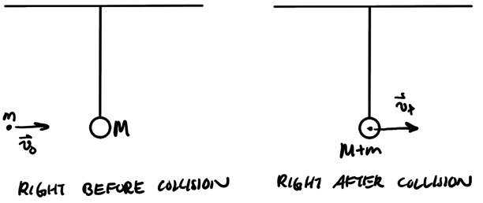
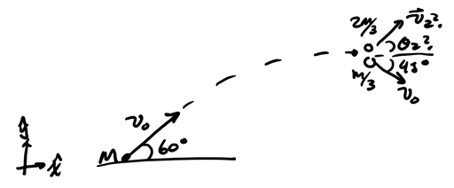
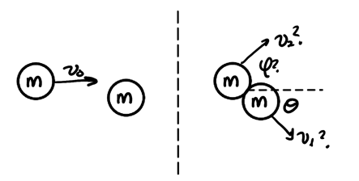

Collisions
Table of Contents
1. Collisions
There are two types of collisions. Elastic collisions are collisions that conserve mechanical energy, thus the kinetic energy is conserved in all kinetic events. Inelastic collisions are collisions in which kinetic energy is not conserved. The energy that is lost during an inelastic collision is transformed into some other type of energy, often thermal energy.
In both types of collisions, momentum is conserved if there is no external force acting on the system.
1.1. Inelastic Collisions
Inelastic collisions do not conserve kinetic energy, as some energy is either lost or added, often due to thermal or chemical events. Collisions that result in deformation are inelastic collisions.
Example: Ballistic pendulum
Consider a ball that is shot into the ring of a ballistic pendulum, which causes it to swing to some height \(H\):

We want to determine the initial speed of the ball and the final speed after it hits the pendulum. We can use conservation of energy at the point right after the collision to find the velocity of the pendulum when the ball hits it, and we can use conservation of momentum to find the speed of the ball before the collision.
Consdering conservation of energy after collision, we have:
\begin{align} \Delta U_g + \Delta K &= 0 \notag \\ (M+m)gH - \frac{1}{2}(M+m)v_f^2 &= 0 \notag \\ \end{align}Thus, we get that:
\begin{align} \boxed{v_f = \sqrt{2gH}} \notag \end{align}Then, using conservation of momentum at the moment before the collision:
\begin{align} \vec{p}_{\text{ball}} + \vec{p}_{\text{ring}} &= \vec{p}_{\text{tot}} \notag \\ mv_0\hat{x} &= (M+m)\sqrt{2gH}\hat{x} \notag \end{align}Thus, we find that:
\begin{align} \boxed{v_0 = \frac{M+m}{m} \sqrt{2gH}} \notag \end{align}Example: Fireworks rocket
A fireworks rocket that is launched from the ground with speed \(v_0\) at \(60^{\circ}\) from the horizontal explodes at maximum height into two fragments, one having mass \(\frac{m}{3}\) and expelled with speed \(v_0\) at \(45^{\circ}\) under the horizontal, and another with mass \(\frac{2m}{3}\). Find the speed and direction of the second fragment:

We can apply conservation of linear momentum because gravitational force has negligible impulse on the pieces of the rocket after the explosion. We know there is no vertical velocity right before the explosion as the rocket is at its maximum height, and we can find the horizontal velocity as:
\begin{align} \vec{v}_i &= v_0 \cos\theta \hat{x} \notag \\ &= v_0 \cos 60^{\circ} \hat{x} \notag \\ &= \frac{v_0}{2} \hat{x} \notag \end{align}Therefore, the initial momentum is \(M\frac{v_0}{2}\hat{x}\). From conservation of momentum, we know that:
\begin{align} \vec{p}_i &= \vec{p}_f \notag \\ \vec{p}_i &= \vec{p}_1 + \vec{p}_2 \notag \end{align}Considering each axis separately:
\begin{align} M\frac{v_0}{2} &= \frac{M}{3}v_0\cos 45^{\circ} + \frac{2M}{3}v_2 \cos \theta_2 \notag \\ 0 &= -\frac{M}{3}v_0\sin 45^{\circ} + \frac{2M}{3}v_2 \sin \theta_2 \notag \end{align}Simplifying the system we have:
\begin{align} \frac{v_0}{2} &= \frac{1}{3}v_0\frac{\sqrt{2}}{2} + \frac{2}{3}v_2\cos\theta_2 \notag \\ 0 &= -\frac{1}{3}v_0\frac{\sqrt{2}}{2} + \frac{2}{3}v_2\sin\theta_2 \notag \end{align}Isolating \(v_2\cos\theta_2\) and \(v_2\sin\theta_2\), we get:
\begin{align} v_2\cos\theta_2 &= \left ( \frac{3 - \sqrt{2}}{4} \right ) v_0 \notag \\ v_2\sin\theta_2 &= \frac{\sqrt{2}}{4}v_0 \notag \end{align}Dividing the two equations, we have:
\begin{align} \tan\theta_2 = \frac{\sqrt{2}}{3-\sqrt{2}} \notag \end{align}Thus, we can take the inverse tangent to find that:
\begin{align} \boxed{\theta_2 = 41.73^{\circ}} \notag \end{align}Now, adding the squares of the equations, we obtain:
\begin{align} v_2^2 \left(\sin^2\theta_2 + \cos^2\theta_2\right) &= \frac{2}{16}v_0^2 + \left(\frac{3-\sqrt{2}}{4}\right)^2v_0^2 \notag \\ v_2^2 &= \frac{2v_0^2}{16} + \frac{11-6\sqrt{2}}{16}v_0^2 \notag \\ v_2^2 &= \left(\frac{13 - 6\sqrt{2}}{16}\right)v_0^2 \notag \end{align}Thus, the velocity of the second particle is:
\begin{align} \boxed{v_2 = \frac{v_0}{4}\sqrt{13-6\sqrt{2}}} \notag \end{align}1.2. Elastic Collisions
For elastic collisions, kinetic energy is conserved in addition to linear momentum. We can separate our study of elastic collisions into two types: 1D and 2D elastic collisions.
1.2.1. 1D Elastic Collisions
When a collision is head-on, when the line joining the center of masses is in the direction of momentum, then the whole process is along one single direction — i.e. the collision is 1D.
For two masses \(m_1\) and \(m_2\) colliding elastically along one axis, we can derive using conservation of kinetic energy and linear momentum the following two equations relating the masses and velocities:
\begin{align} \boxed{v_{1f} = \frac{m_1-m_2}{m_1+m_2}v_{1i} + \frac{2m_2}{m_1+m_2}v_{2i}} \\ \boxed{v_{2f} = \frac{2m_1}{m_1+m_2}v_{1i} + \frac{m_2-m_1}{m_1+m_2}v_{2i}} \end{align}Note that all the velocities have a sign, so we need to choose a consistent coordinate system.
1.2.2. 2D Elastic Collisions
2D collisions occur when the event is not head-on. We can study one special case of 2D collisions, namely that where both objects are of equal mass:

Knowing \(m\) and \(\theta\), we would like to determine \(v_1\), \(v_2\), and \(\phi\). We will use conservation of momentum, then square the equations in order to compare with conservation of kinetic energy.
Conservation of momentum gives us:
\begin{align} m\vec{v}_0 &= m\vec{v}_1 + m\vec{v}_2 \notag \\ \vec{v}_0^2 &= \vec{v}_1^2 + 2\vec{v}_1\cdot \vec{v}_2 + \vec{v}_2^2 \notag \end{align}Conservation of kinetic energy gives us:
\begin{align} \frac{1}{2}mv_0^2 &= \frac{1}{2}mv_1^2 + \frac{1}{2}mv_2^2 \notag \\ v_0^2 &= v_1^2 + v_2^2 \notag \end{align}Comparing with momentum, we realize that \(2\vec{v}_1 \cdot \vec{v}_2 = 0\), which means that \(\vec{v}_1\) and \(\vec{v}_2\) must form a \(90^{\circ}\) angle, thus:
\begin{align} \boxed{\phi = 90^{\circ} - \theta} \notag \end{align}Now, to find the velocities. Using conservation of linear momentum along both axes:
\begin{align} mv_0 &= mv_1\cos\theta + mv_2\cos\left(90^{\circ}-\theta\right) \notag \\ 0 &= -mv_1\sin\theta + mv_2\sin\left(90^{\circ}-\theta\right) \notag \end{align}This can be simplified to:
\begin{align} v_0 &= v_1\cos\theta + v_2\sin\theta \notag \\ 0 &= -v_1\sin\theta + v_2\cos\theta \notag \end{align}Using the second equation, we can express \(v_2\) in terms of \(v_1\):
\begin{align} v_2\cos\theta &= v_1\sin\theta \notag \\ v_2 &= v_1\tan\theta \notag \end{align}Substituting back into the first equation, we obtain:
\begin{align} v_0 &= v_1\cos\theta + v_1\tan\theta\sin\theta \notag \\ v_0 &= v_1\left(\cos\theta + \frac{\sin^2\theta}{\cos\theta}\right) \notag \\ v_0 &= \frac{v_1}{\cos\theta} \notag \end{align}Therefore, the two velocities are:
\begin{align} \boxed{v_1 = v_0\cos\theta} \notag \\ \boxed{v_2 = v_0\sin\theta} \notag \end{align}